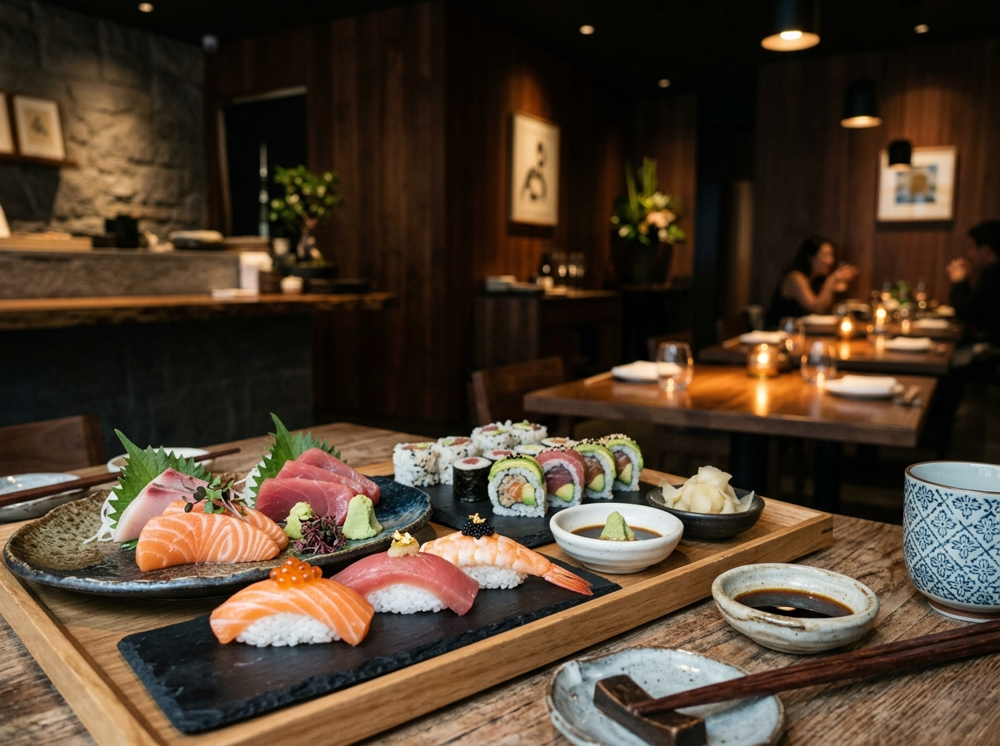
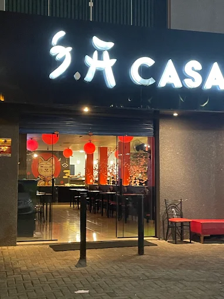
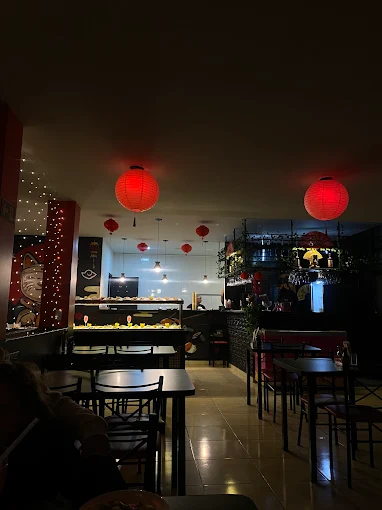
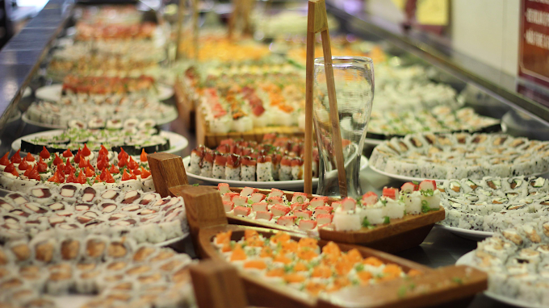
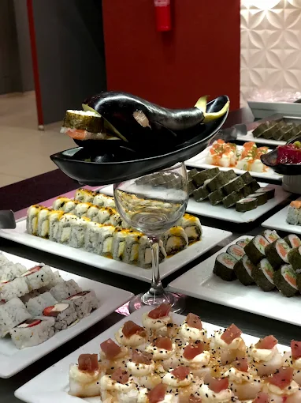
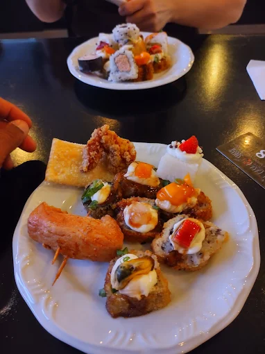
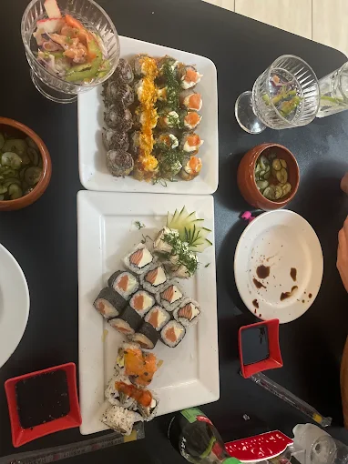

Restaurante de sushi · Fazenda Rio Grande/PR
Buffet de sushi e hot temaki em Fazenda Rio Grande
Sushi fresco, variedade grande e o hot temaki que fez a casa. Servido direto na mesa, no Centro Comercial Milani, na Av. Brasil.
4,2 no Google · 1.133 avaliações
Ticket médio R$ 40–100 por pessoa

Servido na mesa
O sushi chega até você, montado na hora. Sem fila de buffet.
Variedade de verdade
Frios, hots, temaki e combinados — a lista é longa e roda o ano todo.
Casa antiga da região
Tem cliente que começou a vir criança e hoje traz os próprios filhos.
O que servimos
Buffet de sushi com o peixe do dia, montado na hora e servido direto na sua mesa.
-
Buffet de sushi
Sushi e sashimi frescos, com variedade grande e reposição o tempo todo.
-
Hot temaki
O quente da casa, crocante por fora e no ponto por dentro.
-
Combinados
Pra dividir na mesa ou levar pra casa sem ter que escolher.
Salão, retirada na porta e delivery.
O ambiente
Ficamos no Centro Comercial Milani, na Av. Brasil, no bairro Nações. Casa de bairro com clientela antiga — muita gente que veio pela primeira vez com os pais e hoje vem com a própria família.
- Buffet de sushi
- Hot temaki
- Servido na mesa
- Retirada na porta
- Delivery






Quem veio, contou
Nota 4,2 no Google, de 1.133 avaliações de quem já veio.
Difícil explicar em poucas palavras a experiência que tivemos. A comida estava maravilhosa, o tempero da forma como gosto, e o atendimento foi sem igual — o Yago foi nosso garçom, um rapaz super simpático e atencioso.
Esta casa de sushi guarda as memórias mais preciosas da minha vida. Minha história com vocês começou na infância, quando eu vinha com os meus pais e já me encantava com o sabor e o capricho de cada prato.
Maravilhoso atendimento. Trocaram a forma de servir o sushi, agora direto na mesa. Simplesmente amei.
Onde estamos
Av. Brasil, 2057 – Nações, Fazenda Rio Grande/PRCEP 83820-065
No Centro Comercial Milani
Horário
Horário ainda não confirmado — ligue antes de sair de casa.